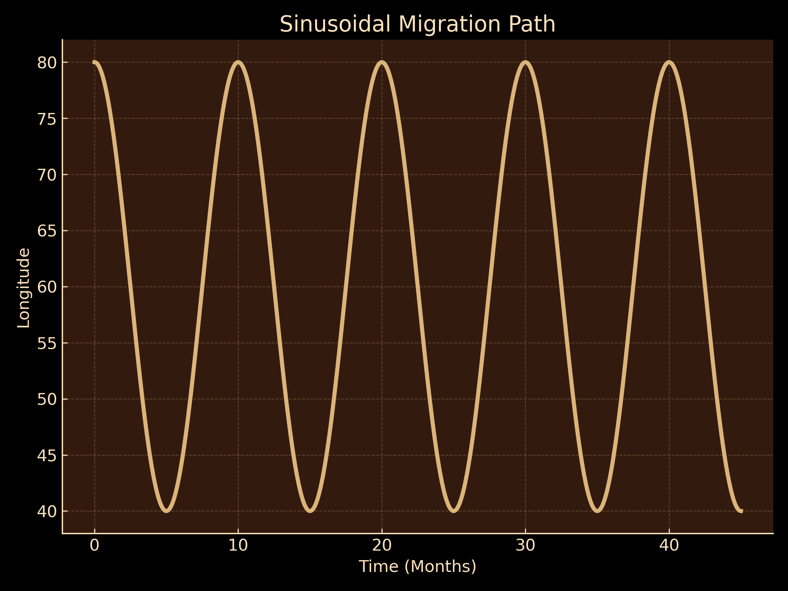
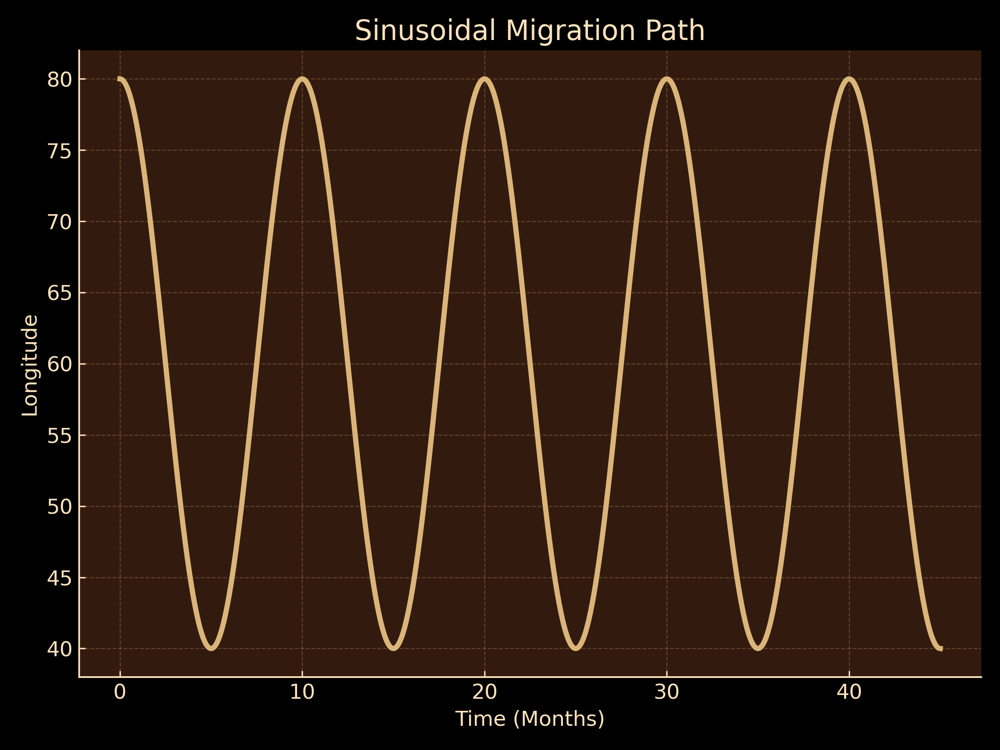

Migrating Birds
Emperor Penguins
Why do they migrate? To reach breeding grounds and to find food in the Antarctic summer.
Migration Information: They travel 50–120 km inland, often in large groups, and brave extreme cold for reproduction.
Migration Sinusoidal FunctionHummingbirds
Why do they migrate? To follow seasonal changes in food availability, seeking nectar and insects as the weather changes in the northern and eastern United States and Canada. They also migrate to escape competition for resources in the tropics.
Migration Information: Travel over 2,000 miles, some species flying nonstop across the Gulf of Mexico.
Migration Sinusoidal FunctionCanada Goose
Why do they migrate? To find suitable breeding grounds and wintering habitats.
Migration Information: Travel in V-formations over thousands of miles across North America during seasonal shifts.
Migration Sinusoidal FunctionSinusoidal Migration of Emperor Penguins
 

The sinusoidal models tracks the latitudinal and longitudinal migration of Emperor Penguins throughout the year.
Latitude Function: 5cos(((π/6)x)-2) + 70
Longitude Function: Varies from colony to colony, but the migration is mainly latitudinal
Emperor penguins tend to migrate latitudinally, starting in areas like Cape Crozier. During March, they feed at sea, accumulating fat reserves to sustain them during the long winter months when they won't be able to hunt. Then, they start their migration walking to colonies where they will breed.